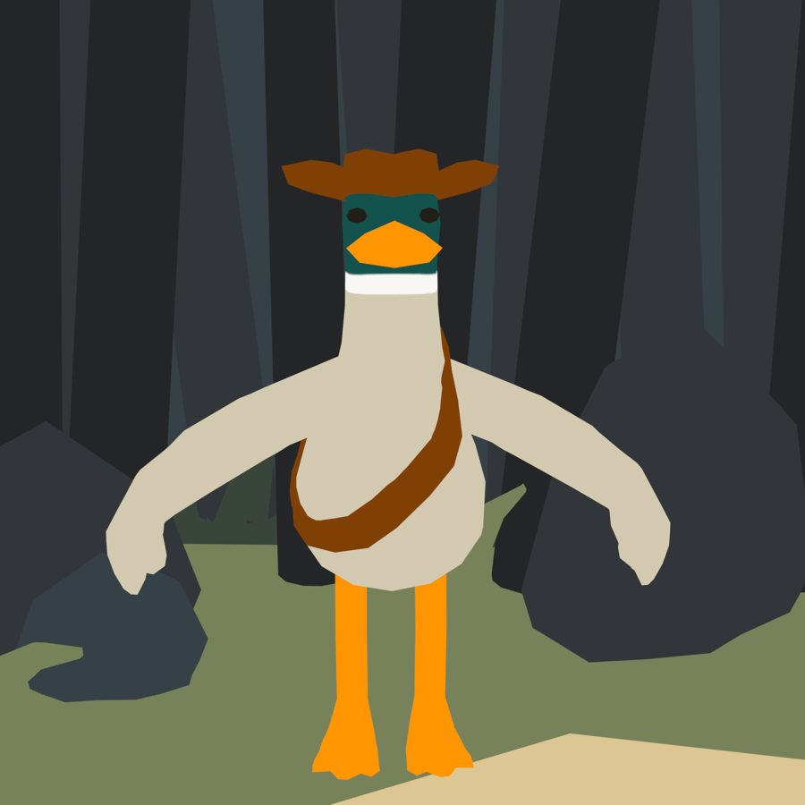

Personaje principal
Pato Rodríguez
- Edad
- 5 años (~30 en años pato)
- Personalidad
- Su personalidad es fría, seria y orientada: solo tiene un objetivo en mente y nada se pondrá en su camino, pero no es demasiado arrogante para aceptar ayuda.
